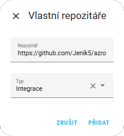
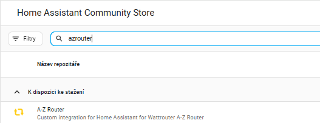
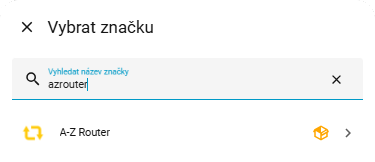
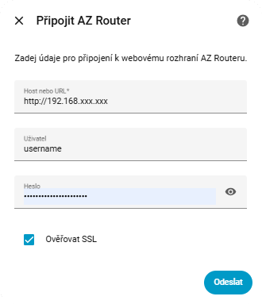
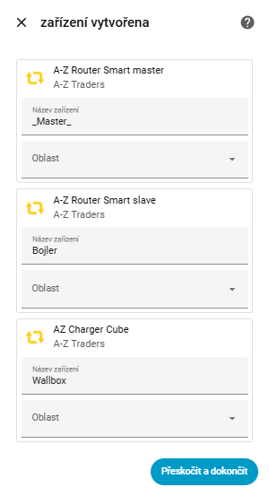
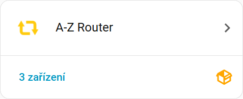
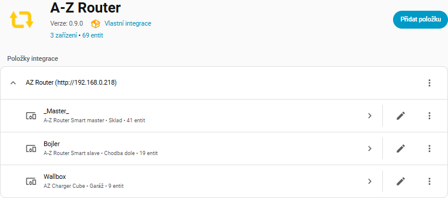
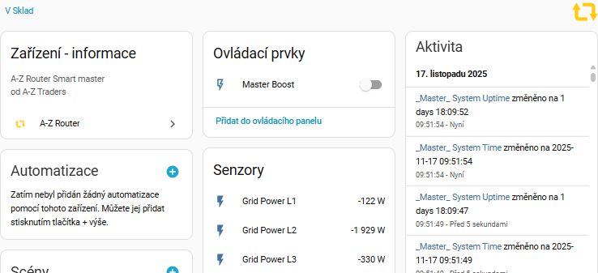
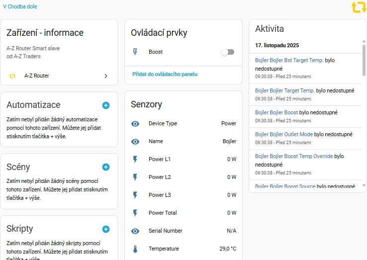
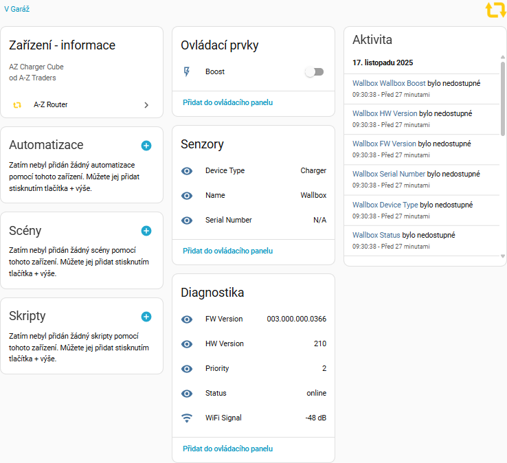

Návod k instalaci integrace A-Z Router do Home Assistantu pomocí HACS custom repository.
Otevři HACS → Integrations, v menu zvol Custom repositories a přidej:
https://github.com/Jenik5/azrouter

Po přidání custom repository se integrace objeví v seznamu HACS integrací a půjde nainstalovat standardním způsobem.

Pokud HACS nepoužíváš, zkopíruj obsah složky custom_components/azrouter do Home Assistant konfigurace
do adresáře /config/custom_components/azrouter a restartuj Home Assistant.
Po instalaci integrace z HACS ji je potřeba přidat do Home Assistantu:

Po zvolení integrace se zobrazí dialog základní konfigurace. Vyplň následující údaje:
http://192.168.xxx.xxx

Po vyplnění údajů potvrď konfiguraci. Home Assistant se pokusí k AZ Routeru připojit a načíst dostupná zařízení.
Po úspěšné konfiguraci se zobrazí seznam nalezených zařízení odpovídajících jednotlivým výstupům AZ Routeru. Každému zařízení můžeš přiřadit oblast (místnost), nebo to udělat později v detailu zařízení.

Po dokončení instalace a základního nastavení se integrace A-Z Router zobrazí v seznamu nainstalovaných integrací v sekci Nastavení → Zařízení a služby.

V detailu integrace uvidíš seznam vytvořených zařízení a jejich stav. Odtud se můžeš prokliknout na jednotlivá zařízení (např. bojler, wallbox, apod.).

Master zařízení integrace A-Z Router obsahuje obecné senzory, diagnostické informace a přehled celkového stavu AZ Routeru.

Zařízení Power (např. bojler) obsahuje všechny ovladače a senzory související s daným výkonovým výstupem – například přepínání režimů, povolení ohřevu, aktuální příkon a další údaje.

Zařízení Charger (wallbox) obsahuje ovládací prvky nabíjení, senzory výkonu a další parametry týkající se nabíjení elektromobilu.
